4단계까지 승인한 규칙을 실제 화면에서 함께 확인한다. 접근성 후속 검토는 마지막에 진행한다.
브랜드 주황 #ff6914와 흰 글씨, 본문14px·28px 행간, 기존 화면의 역할별 형태를 유지한다. 공통 탐색1200px·교과목/예약1024px 전환, 영어 필터 줄바꿈, 필드 아래 오류, 긴 첨부 말줄임, 처리 중 행동 문구를 적용했다.
이번에 예약 취소 용어와 작은 확인창도 적용했다. 확인창은640px 미만90vw·최대512px, 버튼 글자는 유지하고 버튼 단위로 줄바꿈한다.
기존 기준과의 차이를 승인한 DS 변경, 기존 회귀 차이, 새 문제로 나누어 검토한다. 이 결과는 전체 DS 완료나 모든 언어·상태 조합의 통과를 뜻하지 않는다. 세부 결과·한계 · 추가 장면 측정
참가자 화면의 기존 가로 넘침은 LT-Q1 줄바꿈 비교로 검토한다. 개인정보 표는 실제 가로 스크롤이 가능해 유지한다. 회귀 파일별 분류.
이미지를 누르면 원본을 볼 수 있다. 로컬 실제 API의 고정 시드 콘텐츠이며, 마지막 확인창은 고정 오버레이가 보이는 뷰포트 캡처다.
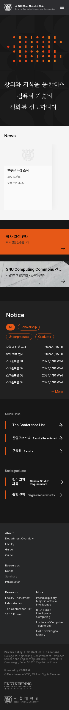
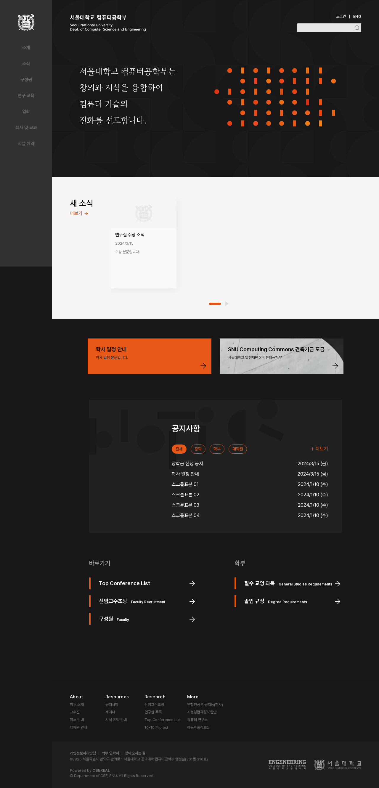
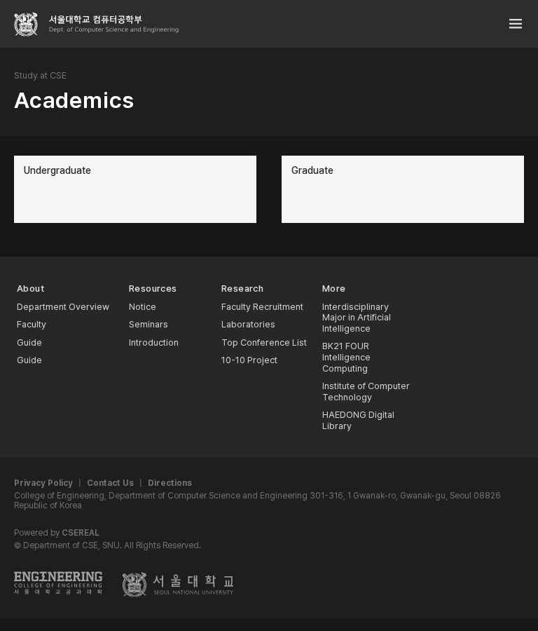
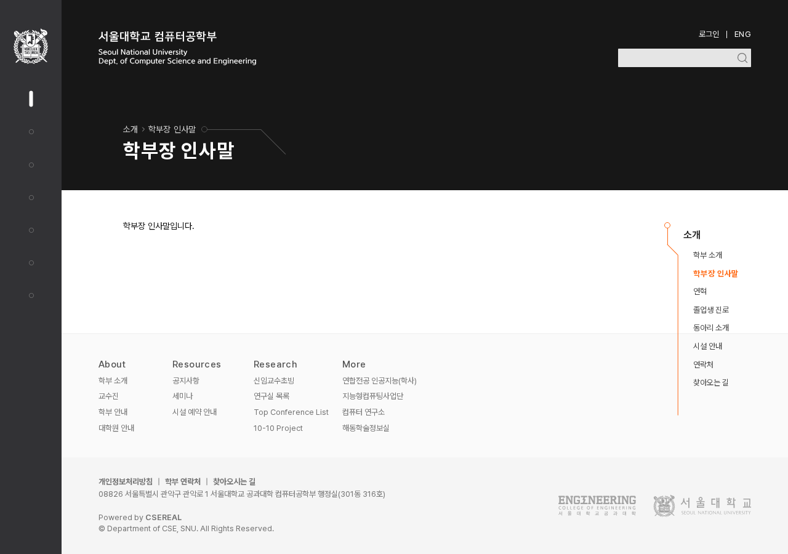
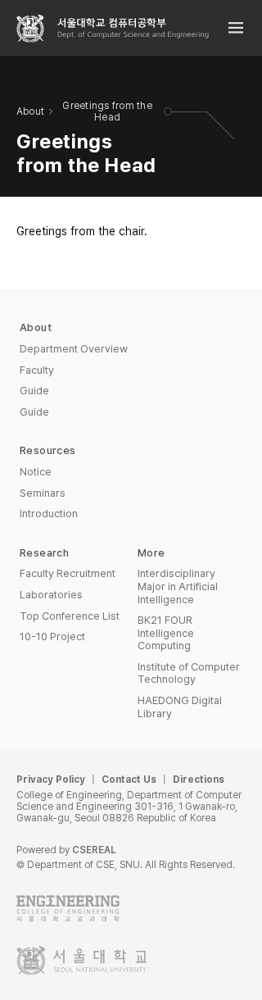
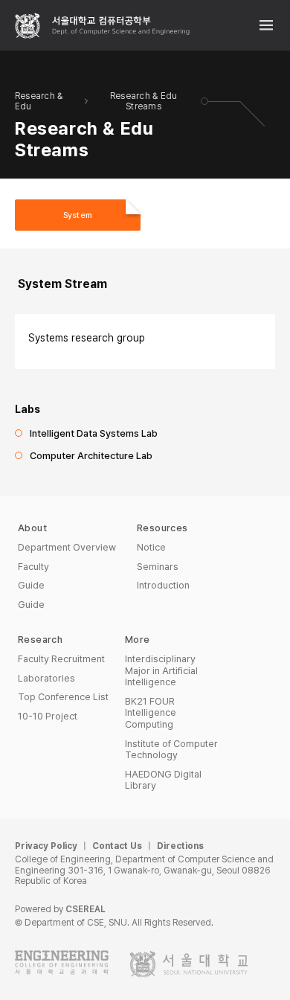
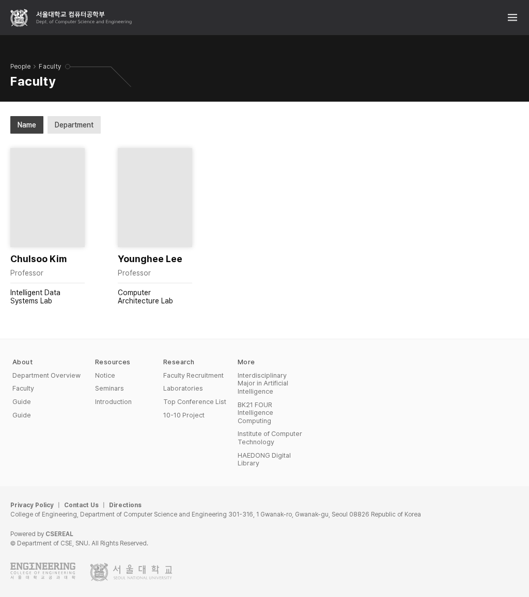
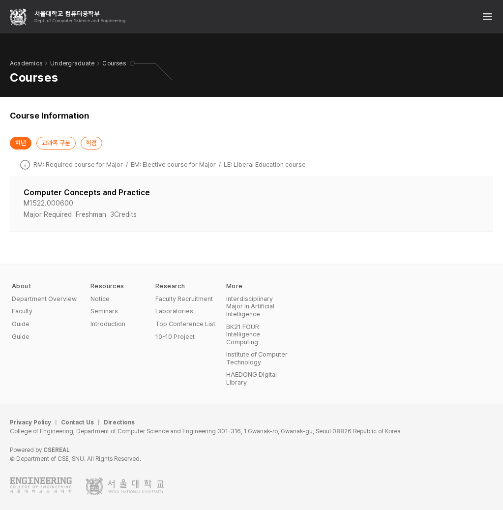
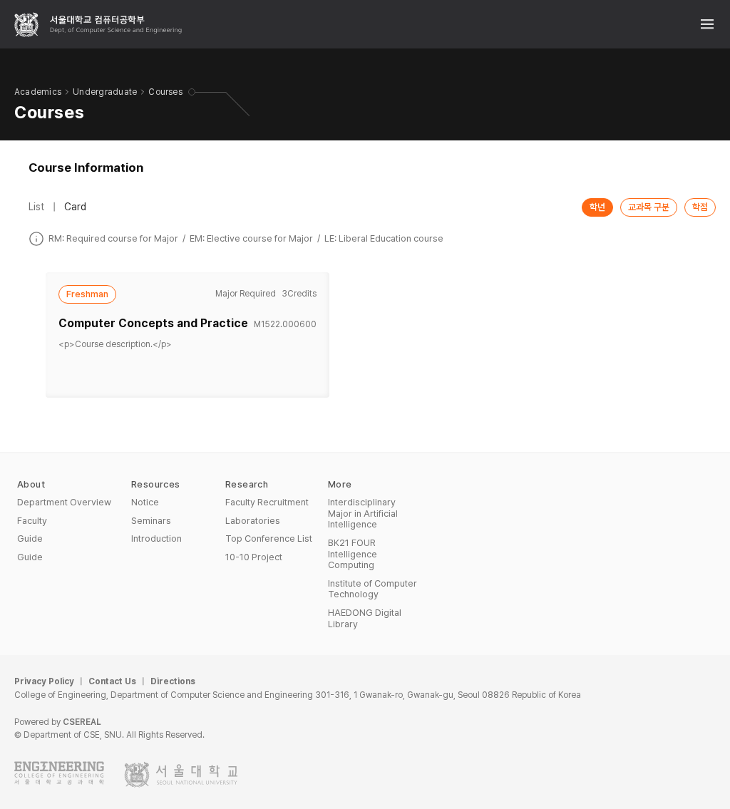
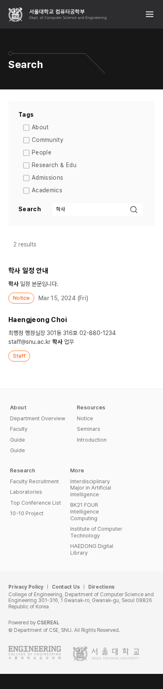
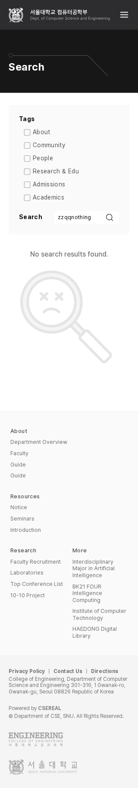
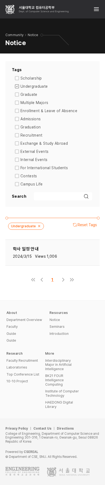
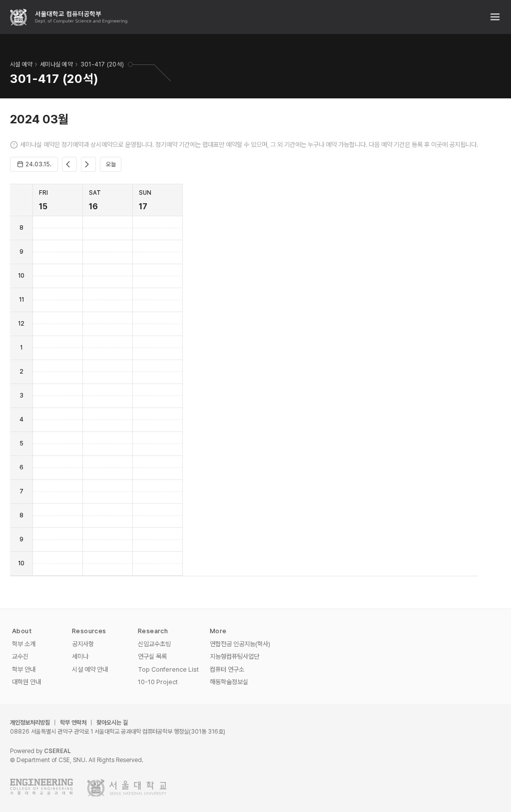
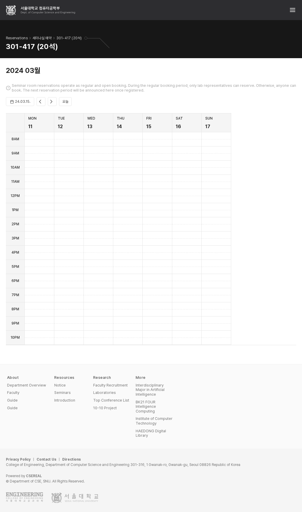
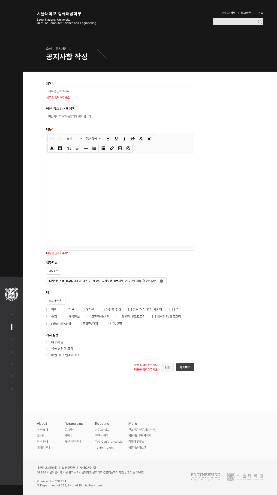
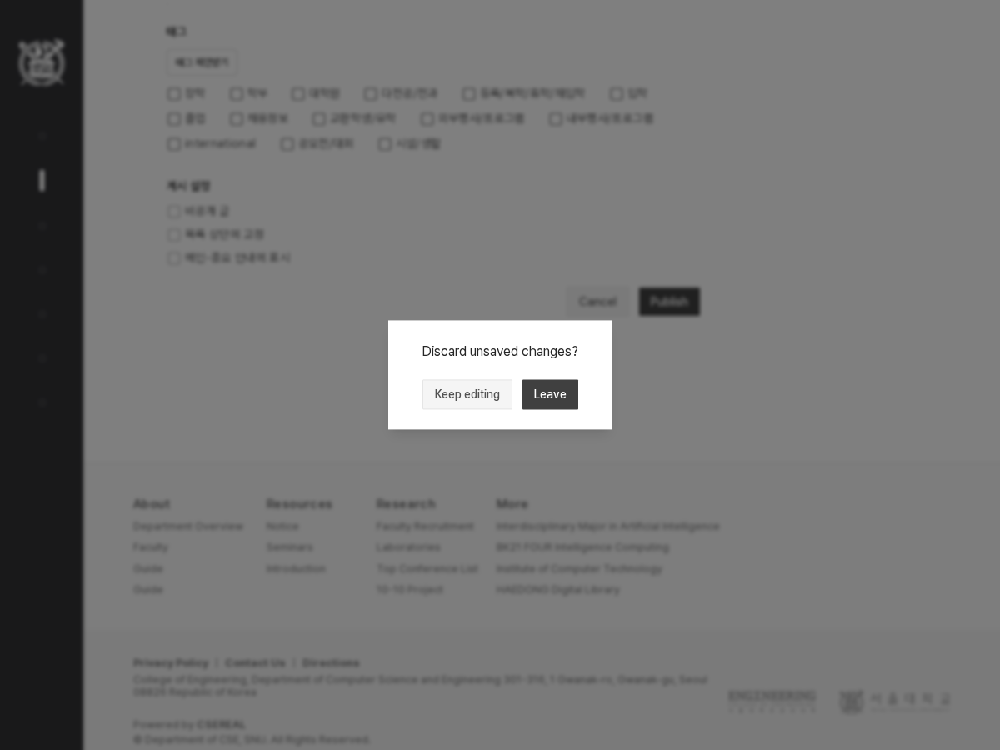